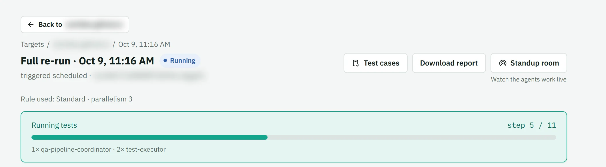
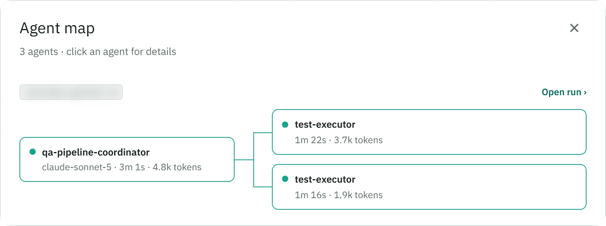
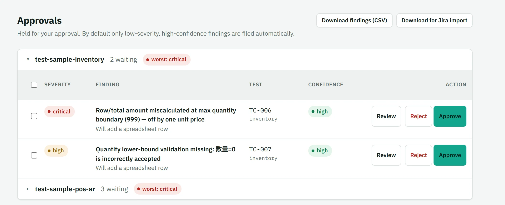
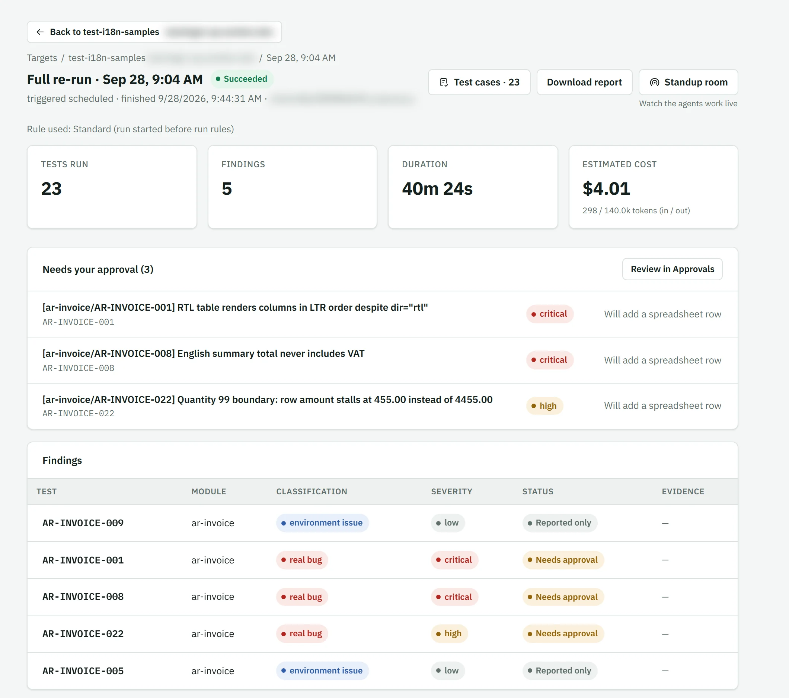
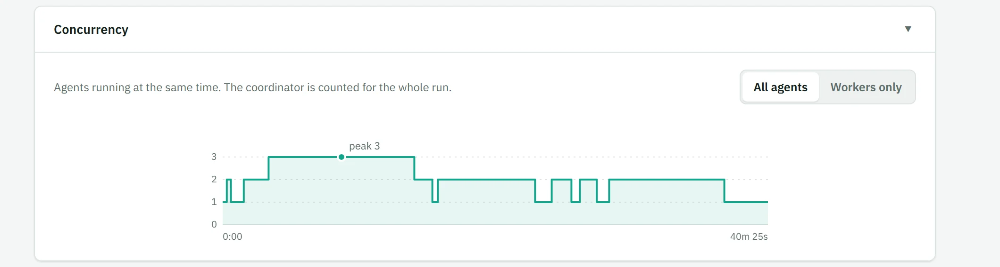
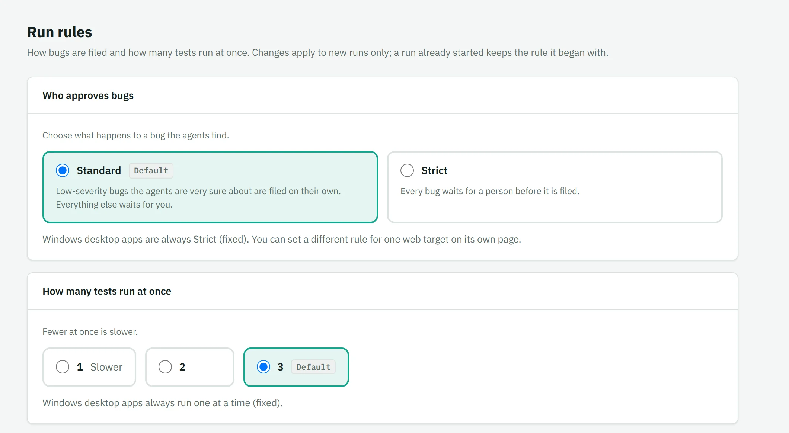
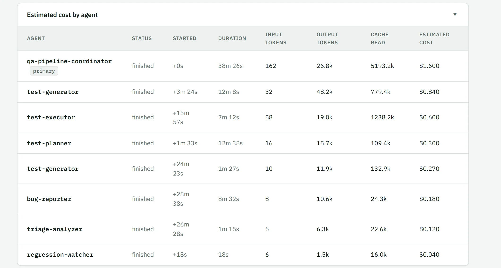

STRATEGY, AI & IT CONSULTING — GLOBAL, REMOTE-FIRST
Hamingcs pairs strategy and hands-on leadership with AI/data expertise and the systems, security, and DevOps architecture needed to put ambition into production — and keep it there.
01 — AI & DATA
Building and running AI and data functions inside large organizations — from first strategy to global teams.
02 — SYSTEMS & SECURITY
Enterprise systems, cloud/SaaS transformation, and security architecture engineered for scale.
03 — STRATEGY & LEADERSHIP
Hands-on ownership of budget, global teams, and market strategy — comfortable with a P&L of any size, proven at director and CTO level with a 300-person team spanning the US, EU, Japan, China, and the Middle East.
WHY THREE DISCIPLINES
Most AI initiatives don't fail on the model. They fail on the system underneath it — or the strategy and leadership that never turned the plan into a running function.
I've spent my career across all three: setting AI and data strategy at the leadership level, owning the P&L and team that deliver it, and — from the same technical grounding — architecting, reviewing, and securing the systems that have to carry it.
Hamingcs exists because those conversations are usually happening in different rooms, and shouldn't be.
MY BACKGROUND
Two decades of enterprise experience, earned on the way up — not assembled from a slide.
It started hands-on: building automotive diagnostic software in Java, then leading the architecture behind it — defining data models, distributing work across teams, and tracing production defects back to root cause when something didn't hold.
That technical grounding is what later underwrote the leadership: managing P&L on a project, then scaling into director and CTO-level ownership of an AI and data function — 300 people across the US, EU, Japan, China, and the Middle East, business and market strategy included, plus leading the cloudification and digitalisation of the technology stack underneath it. Hamingcs combines strategy, delivery, and security under one practice, in the order they were actually learned.
FOUNDER INTERVIEW
Answers by the Founder
Why Hamingcs
AI projects
QA Agents Cloud
If this is how you want to work, ask for a pilot.
See the pilotHOW I APPROACH STRATEGY
Before any solutioning, I frame the actual business problem — not the symptom the organization first brings me.
Two or three real strategic paths, stress-tested against likely market, competitor, and internal responses before a euro or a headcount is committed.
Once a direction is set, I take operational ownership of it — budget, team, and delivery — not just the recommendation.
Roadmaps get revisited against real market signal, the way a strategy built while penetrating new markets has to — not filed away after the kickoff.
HOW I WORK
I don't hand over a slide deck and leave. Recommendations come with an honest view of what it takes to run them.
Threat modeling and release architecture are typically part of the first design conversation, not a review at the end.
Global and remote-first, with direct experience across European, Asian, and Middle Eastern operating environments.
SERVICES
I work across the full path from strategy to running system — engage me for any one discipline, or all three.
AI & DATA
An honest assessment of where AI creates real value in your operations — and where it doesn't — followed by a roadmap your teams can actually execute.
Hands-on leadership for building or scaling an AI or data function: hiring, structure, budget and P&L ownership, and operating cadence.
Designing the data vision, models, and governance an organization needs before AI initiatives can be built on top of it reliably.
Independent, hands-on review of code, technical designs, and AI-generated outputs — catching flawed assumptions and correctness gaps before they ship, not after.
Copilots, retrieval-augmented assistants, and workflow automation built on large language models — scoped to problems worth solving, not novelty demos.
Putting risk, oversight, and compliance frameworks in place as AI regulation (like the EU AI Act) catches up with deployment.
SYSTEMS & SECURITY
Moving on-premise products to secure, multi-region SaaS deployments — including the operational model to support and monitor them once live.
Building release pipelines that support frequent, reliable delivery across multiple product versions, at enterprise scale.
Threat modeling, code scanning, and penetration testing that can be built into the release cycle rather than bolted on afterward.
Test classification and automation strategy that scales with a growing codebase instead of slowing it down.
Readiness assessments against frameworks like SOC 2 and ISO 27001, with a practical remediation plan rather than a checklist to file away.
Reviewing cloud architecture and spend as usage grows, so infrastructure scales without the bill quietly outpacing it.
STRATEGY & LEADERSHIP
Turning market and technology signals into a strategy the business can actually execute — including where I take direct ownership of it.
Full financial ownership of a function or programme, at any scale — budgeting, forecasting, and cost control, from lean project budgets to a large, multi-region P&L, not just a recommendation on a slide.
Building and leading distributed teams across regions: hiring, structure, and operating cadence, drawn from scaling a function to 300 people across the US, EU, Japan, China, and the Middle East.
Defining go-to-market and driving penetration into new markets and customer segments, including direct experience opening accounts across China, Japan, and the EU.
Acting as innovation advisor to enterprise clients and internal stakeholders — from first idea to a funded, resourced initiative.
Structuring university and research collaborations, including PhD placements, that feed real capability into a commercial team.
HOW I ENGAGE
Retained strategy input for AI, data, and security decisions as they come up.
Start a conversationA hands-on strategy, AI, data, or systems lead inside your organization — including full P&L and team ownership while you build the function.
Start a conversationA defined engagement against a specific outcome — an architecture, an audit, a migration.
Start a conversationAI agents test your web app from your specifications, and bugs wait for a person to approve them before they are filed.
See the pilotQA AGENTS CLOUD
QA Agents Cloud is the testing product I built and run myself. AI agents plan and run tests against your web application from your specifications, and hold the bugs they find for a person to approve; you choose how strict that is. Every screenshot below comes from a run on a sample application, not from a customer.







The first step is a paid, fixed-scope pilot on your web application. Scope and fee are agreed in writing before it starts, and I make no promises about results. Windows desktop testing is proven on a sample application, not yet with a customer.
FAQ
How engagements start, how I work, and how confidentiality is handled.
CONTACT
Whether it's a strategy question, an AI/data challenge, a systems and security review, or all three — get in touch directly.